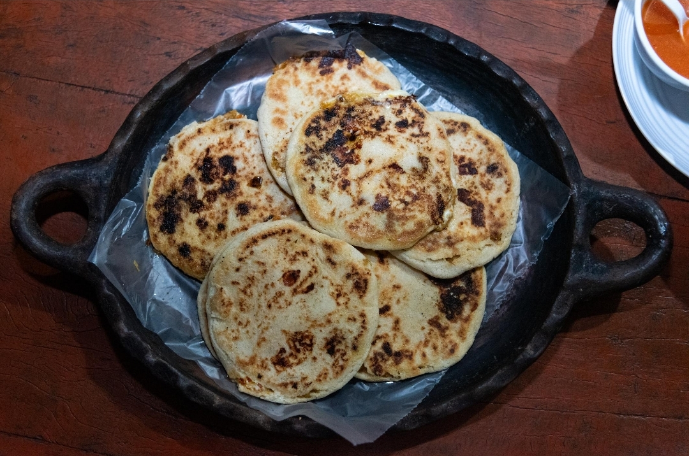

Nuestra historia
En Pupusería Andalucía nacimos con el deseo de compartir el auténtico sabor salvadoreño a través de pupusas preparadas con dedicación, ingredientes frescos y recetas tradicionales.
Nuestro objetivo es ofrecer a cada cliente una experiencia familiar, cálida y llena de sabor, donde cada pupusa recuerde la tradición de nuestra tierra.

Misión
Brindar a nuestros clientes pupusas artesanales de excelente calidad, preparadas con ingredientes frescos y un servicio amable, conservando el sabor tradicional salvadoreño.
Visión
Ser una pupusería reconocida por su sabor, calidad y atención, convirtiéndonos en una opción favorita para las familias que buscan disfrutar comida típica salvadoreña.